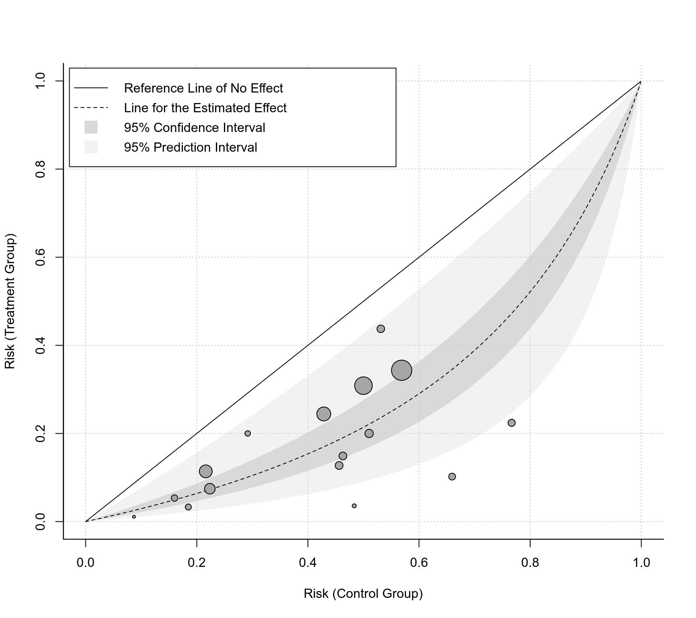
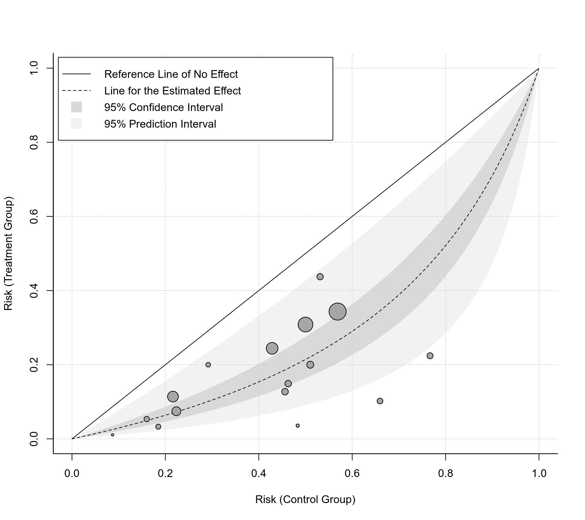

L'Abbe Plots for 'rma' Objects
labbe.RdFunction to create L'Abbé plots for objects of class "rma".
labbe(x, ...)
# S3 method for class 'rma'
labbe(x, xlim, ylim, lim, xlab, ylab, flip=FALSE,
ci=FALSE, pi=FALSE, grid=FALSE, legend=FALSE,
add=x$add, to=x$to, transf, targs,
pch=21, psize, plim=c(0.5,3.5),
col, bg, lty, ...)Arguments
- x
an object of class
"rma".- xlim
x-axis limits. If unspecified, the function sets the x-axis limits to some sensible values.
- ylim
y-axis limits. If unspecified, the function sets the y-axis limits to some sensible values.
- lim
axis limits. If specified, this is used for both
xlimandylim.- xlab
title for the x-axis. If unspecified, the function sets an appropriate axis title.
- ylab
title for the y-axis. If unspecified, the function sets an appropriate axis title.
- flip
logical to specify whether the groups to plot on the x- and y-axis should be flipped (the default is
FALSE).- ci
logical to specify whether the confidence interval region should be shown in the plot (the default is
FALSE). Can also be a color name.- pi
logical to specify whether the prediction interval region should be shown in the plot (the default is
FALSE). Can also be a color name.- grid
logical to specify whether a grid should be added to the plot (the default is
FALSE). Can also be a color name.- legend
logical to specify whether a legend should be added to the plot (the default is
FALSE). Can also be a keyword to specify the position of the legend (seelegend). Argumentslegend.cex,legend.pt.cex, andlegend.insetare passed on to the corresponding arguments of thelegendfunction via the...argument.- add
See the documentation of the
escalcfunction for more details.- to
See the documentation of the
escalcfunction for more details.- transf
optional argument to specify a function to transform the outcomes (e.g.,
transf=exp; see also transf). If unspecified, no transformation is used.- targs
optional arguments needed by the function specified under
transf.- pch
plotting symbol to use for the outcomes. By default, an open circle is used. Can also be a vector of values. See
pointsfor other options.- psize
optional numeric vector to specify the point sizes for the outcomes. If unspecified, the point sizes are a function of the precision of the outcomes. Can also be a vector of values.
- plim
numeric vector of length 2 to scale the point sizes (ignored when
psizeis specified). See ‘Details’.- col
optional character string to specify the (border) color of the points. Can also be a vector.
- bg
optional character string to specify the background color of open plot symbols. Can also be a vector. Set to
NAto make the plotting symbols transparent.- lty
optional argument to specify the line type for the diagonal reference line of no effect and the line that indicates the estimated effect based on the fitted model. If unspecified, the function sets this to
c("solid","dashed")by default (use"blank"to suppress a line).- ...
other arguments.
Details
The model specified via x must be a model without moderators (i.e., either an equal- or a random-effects model) fitted with either the rma.uni, rma.mh, rma.peto, or rma.glmm functions. Moreover, the model must have been fitted with measure set equal to "RD" (for risk differences), "RR" (for risk ratios), "OR" (for odds ratios), "AS" (for arcsine square root transformed risk differences), "IRR" (for incidence rate ratios), "IRD" (for incidence rate differences), or "IRSD" (for square root transformed incidence rate differences).
The function calculates the arm-level outcomes for the two groups (e.g., treatment and control) and plots them against each other. In particular, the function plots the raw proportions of the two groups against each other when analyzing risk differences, the log of the proportions when analyzing (log) risk ratios, the log odds when analyzing (log) odds ratios, the arcsine square root transformed proportions when analyzing arcsine square root transformed risk differences, the raw incidence rates when analyzing incidence rate differences, the log of the incidence rates when analyzing (log) incidence rate ratios, and the square root transformed incidence rates when analyzing square root transformed incidence rate differences. The transf argument can be used to transform these values (e.g., transf=exp to transform the log of the proportions back to raw proportions; see also transf).
As described under the documentation for the escalc function, zero cells can lead to problems when calculating particular outcomes. Adding a small constant to the cells of the \(2 \times 2\) tables is a common solution to this problem. By default, the functions adopts the same method for handling zero cells as was used when fitting the model.
By default (i.e., when psize is not specified), the point sizes are a function of the precision (i.e., inverse standard errors) of the outcomes. This way, more precise estimates are visually more prominent in the plot. By making the point sizes a function of the inverse standard errors of the estimates, their areas are proportional to the inverse sampling variances, which corresponds to the weights they would receive in an equal-effects model. However, the point sizes are rescaled so that the smallest point size is plim[1] and the largest point size is plim[2]. As a result, their relative sizes (i.e., areas) no longer exactly correspond to their relative weights in such a model. If exactly relative point sizes are desired, one can set plim[2] to NA, in which case the points are rescaled so that the smallest point size corresponds to plim[1] and all other points are scaled accordingly. As a result, the largest point may be very large. Alternatively, one can set plim[1] to NA, in which case the points are rescaled so that the largest point size corresponds to plim[2] and all other points are scaled accordingly. As a result, the smallest point may be very small. To avoid the latter, one can also set plim[3], which enforces a minimal point size.
The solid line corresponds to identical outcomes in the two groups (i.e., the absence of a difference between the two groups). The dashed line indicates the estimated effect based on the fitted model. If ci=TRUE, then the darker shaded region indicates the corresponding confidence interval. If pi=TRUE, then the lighter shaded region indicates the corresponding prediction interval.
Value
A data frame with components:
- x
the x-axis coordinates of the points that were plotted.
- y
the y-axis coordinates of the points that were plotted.
- cex
the point sizes.
- pch
the plotting symbols.
- col
the point colors.
- bg
the background colors.
- ids
the study id numbers.
- slab
the study labels.
Note that the data frame is returned invisibly.
References
Jiménez, F. J., Guallar, E., & Martín-Moreno, J. M. (1997). A graphical display useful for meta-analysis. European Journal of Public Health, 7(1), 101–105. https://doi.org/10.1093/eurpub/8.1.92
L'Abbé, K. A., Detsky, A. S., & O'Rourke, K. (1987). Meta-analysis in clinical research. Annals of Internal Medicine, 107(2), 224–233. https://doi.org/10.7326/0003-4819-107-2-224
Viechtbauer, W. (2010). Conducting meta-analyses in R with the metafor package. Journal of Statistical Software, 36(3), 1–48. https://doi.org/10.18637/jss.v036.i03
See also
Examples
### meta-analysis of log odds ratios using a random-effects model
dat <- dat.damico2009
res <- rma(measure="OR", ai=xt, n1i=nt, ci=xc, n2i=nc, data=dat)
res
#>
#> Random-Effects Model (k = 16; tau^2 estimator: REML)
#>
#> tau^2 (estimated amount of total heterogeneity): 0.2337 (SE = 0.1574)
#> tau (square root of estimated tau^2 value): 0.4835
#> I^2 (total heterogeneity / total variability): 61.81%
#> H^2 (total variability / sampling variability): 2.62
#>
#> Test for Heterogeneity:
#> Q(df = 15) = 33.5329, p-val = 0.0040
#>
#> Model Results:
#>
#> estimate se zval pval ci.lb ci.ub
#> -1.3001 0.1700 -7.6483 <.0001 -1.6333 -0.9669 ***
#>
#> ---
#> Signif. codes: 0 ‘***’ 0.001 ‘**’ 0.01 ‘*’ 0.05 ‘.’ 0.1 ‘ ’ 1
#>
### default plot with log odds on the x- and y-axis
labbe(res)
 ### plot with odds values on the x- and y-axis and some customization
labbe(res, ci=TRUE, pi=TRUE, grid=TRUE, legend=TRUE, bty="l",
transf=exp, xlab="Odds (Control Group)", ylab="Odds (Treatment Group)")
### plot with odds values on the x- and y-axis and some customization
labbe(res, ci=TRUE, pi=TRUE, grid=TRUE, legend=TRUE, bty="l",
transf=exp, xlab="Odds (Control Group)", ylab="Odds (Treatment Group)")
 ### plot with risk values on the x- and y-axis and some customization
labbe(res, ci=TRUE, pi=TRUE, grid=TRUE, legend=TRUE, bty="l",
transf=plogis, lim=c(0,1), xlab="Risk (Control Group)",
ylab="Risk (Treatment Group)")

### plot with risk values on the x- and y-axis and some customization
labbe(res, ci=TRUE, pi=TRUE, grid=TRUE, legend=TRUE, bty="l",
transf=plogis, lim=c(0,1), xlab="Risk (Control Group)",
ylab="Risk (Treatment Group)")
